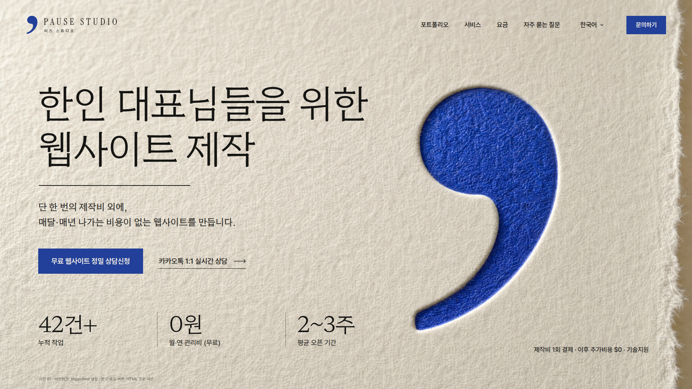
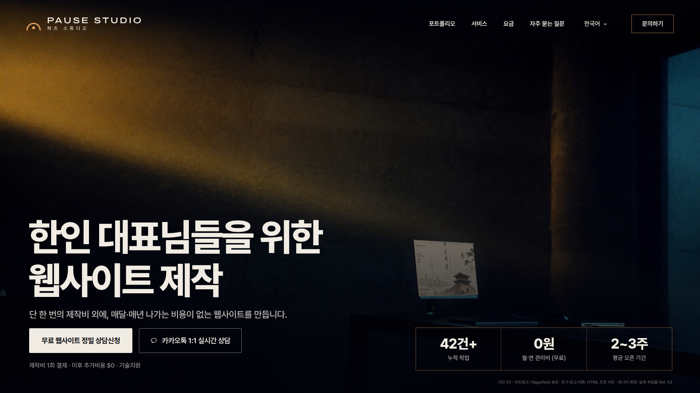
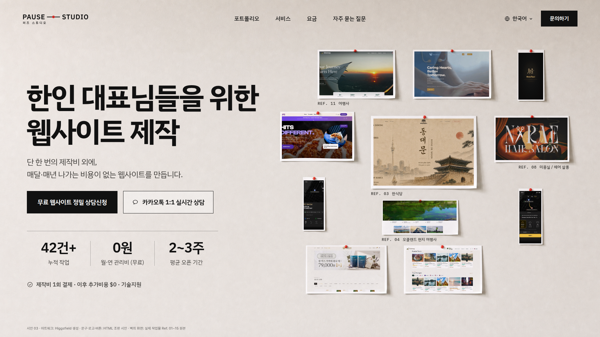
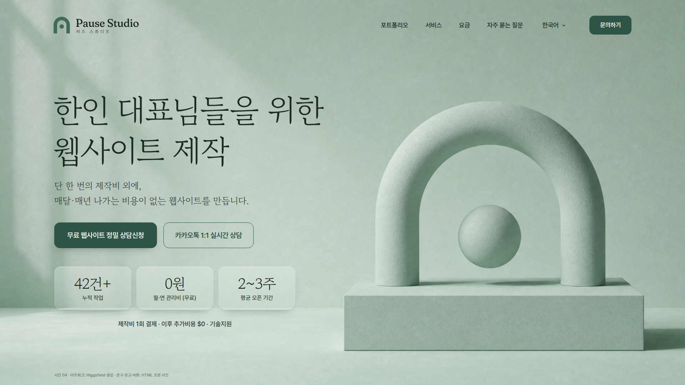
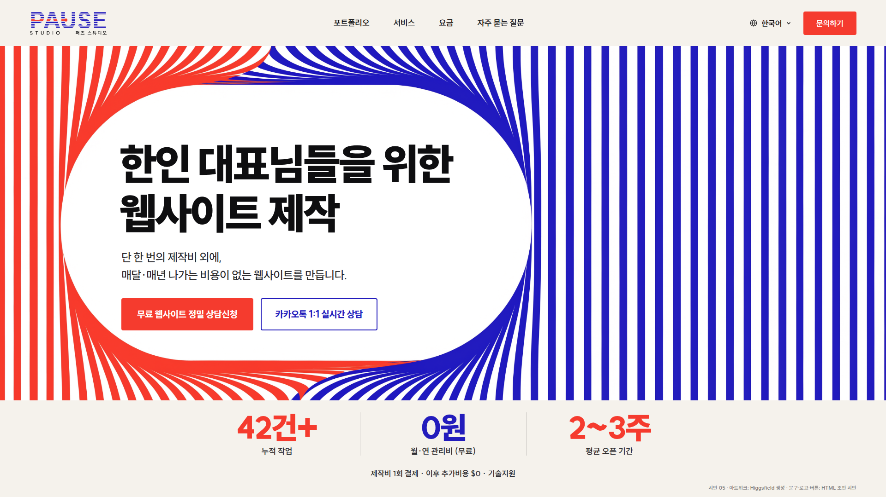

01
쉼표 편집·타이포그래피
밝음 · 목화지 + 군청 잉크 · Hahmlet 세리프
시선: 헤드라인 · 영상: 측광이 종이를 지나며 쉼표의 음영이 깊어짐

02
머무는 빛 사진·시네마틱
어두움 · 호박빛 × 청흑 · Pretendard ExtraBold
시선: 빛줄기와 모니터 속 실제 작업물 · 영상: 빛 속 먼지만 움직임

03
크리틱 월 실제 작업물·포트폴리오
중간 · 벽 + 핀의 빨강 · IBM Plex Sans KR
시선: 핀으로 꽂은 실제 작업물 11점 · 영상: 빈 벽의 나뭇잎 그림자

04
청자 페르마타 재료·조형
중간 · 톤온톤 청자 · 고운바탕
시선: 석고 늘임표 조형 · 영상: 구가 떠오르며 자전

05
렌즈 그래픽·광학
밝음 · 주홍 × 군청 평행선 · SUIT Heavy
시선: 선이 비켜난 렌즈 속 문구 · 영상: 선의 물결 흐름
로고안 5종 방향별 설계
 L1 쉼표 · 추천
L1 쉼표 · 추천 L2 페르마타
L2 페르마타 L3 색인 대시
L3 색인 대시 L4 조형 늘임표
L4 조형 늘임표 L5 멈춘 재생 바
L5 멈춘 재생 바